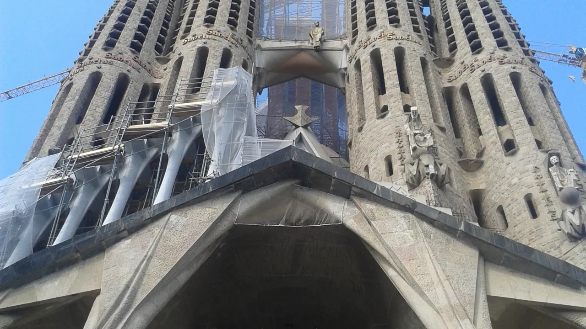

바르셀로나·시체스 3박 4일
여행의 역할: 장기 유럽여행의 첫 거점에서 시차를 조절하면서, 바르셀로나의 도시 구조와 카탈루냐 문화에 천천히 진입하는 구간이다. 유료 가우디 명소는 사그라다 파밀리아만 방문하고, 나머지는 산책·시장·도서관·현대미술·책방·현지 음식으로 구성한다. 9월 1일에는 바르셀로나에서 렌터카를 인수해 시체스를 방문한 뒤 지로나로 이동한다.
여행자 기준: Julia의 수영은 선택 일정이며 숙소 선정 조건으로 사용하지 않는다. 아침은 숙소, 점심은 샌드위치·시장·가벼운 현지식, 저녁은 레스토랑을 기본으로 한다.